Escuela Normal Rural fue el nombre original del proyecto educativo en convenio con la Alianza el progreso del Gobierno de los Estados Unidos en 1945, mediante un convenio aprobado por el decreto N° 8.635 del 10 de mayo de 1945.

En cumplimiento del convenio, el Ministro de Educación adquirió dos fracciones de terreno, en la ciudad de San Lorenzo, que forma un solo cuerpo cuyas superficies suman más de siente hectáreas cuadradas. En este lugar el Gobierno de los Estados Unidos de América debía construir el edificio de la futura escuela. Y fue así como el 25 de abril de 1955 se colocaba la piedra fundamental, dando así comienzo a los trabajos de construcción que llegaron a su término al año siguiente.
En este lugar el Gobierno de los Estados Unidos de América debía construir el edificio de la futura escuela. Y fue así como el 25 de abril de 1995 se colocaba la piedra fundamental, dando así comienzo a los trabajos de construcción que llegaron a su término al año siguiente. La inauguración de la escuela ya concluida y con clases en funcionamiento se llevó a cabo el 25 de abril de 1956, justo a un año después de su inauguración. En efecto, faltando todavía algunos detalles al edificio, las clases comenzaron en marzo de 1956.
Por decreto N° 28.343 del poder Ejecutivo, promulgado del 22 de abril de 1963 la Institución se transformó en el Primer Centro Regional de Educación la República, la dirección fue ejercida por un director General designado por el Ministerio de Educación del Paraguay y un Asesor Americano.
El Proyecto empezó con la firma de un convenio entre la administración del Servicio Cooperativo Interamericano de Educación, firmado entre el Ministerio de Educación por el gobierno Nacional y el Director de Operaciones por el gobierno de los Estados Unidos firmado el 29 de junio de 1.954, esto sirvió para la implementación de la Escuela Normal Rural y dotarla de edificios propios con suficiente espacio físico.
Con el aporte de 185.000 dólares donado por el Instituto Interamericano del Gobierno de los Estados Unidos que sirvieron para la construcción de los bloques, la provisión de muebles y otros gastos que demandaron la edificación de la futura Escuela Normal Rural, el Gobierno Nacional por su parte aportó con el local de la Escuela Franklin Delano Roosevelt mas otras propiedades adyacentes a la misma.
Fue creado con el propósito de albergar alumnas que provenían del interior del país (puesto que carecían de centros de estudios en las mismas ciudades del interior) con el objeto de formar, capacitar y actualizar maestros en ejercicio, en la respectiva Escuela Normal Rural. Normalmente vivían de ciento veinte a ciento cuarenta alumnas aproximadamente en el internado.
El Internado dejó de funcionar en el año 1976, su funcionamiento y existencia ya no se justificaba, por la razón de que se crearon más centros de estudios en distintos puntos de nuestro país y los alumnos asistían donde les quedaba más cerca de donde residían y sobre todo el alto costo que implicaba mantener el internado.
Tenían una comisión de ayuda, organizaban colectas y junto con las estudiantes las donaban al internado del Hogar San Francisco de Asís. Organizaban cócteles a partir de las 13:00 hs. Hasta las 18:00 hs con Orquestas con el objeto de recaudar fondos para la colación, asistían muchas personas además de los Cadetes del Colegio Militar. Además organizaban torneos, jugaban handball y otros juegos. Cultivaban huertas, las que consumían y vendían, criaban aves del Corral, cerdos, trabajaban en jardines. Cantaban en grupos en la sala de música, leían libros en la Biblioteca, participaban en el festival de danzas típicas, etc.
Saturio Cándido Ríos pintor paraguayo nacido en (San Lorenzo, 2 de octubre de 1846 - San Lorenzo, 17 de julio de 1920). Fueron sus padres Vicente Ferrer Ríos y Francisca Petrona Castro. Tras terminar sus estudios en Asunción los completó en Brasil y París. Fue oficial del ejercito durante la Guerra de la Triple Alianza y estableció el primer telégrafo en el país.
Durante la contienda realizó con tintes de tierra, al igual que se hiciera en las misiones jesuíticas, un retrato del obispo Palacios en el Campamento de Humaitá. Colaboró con los periódicos de guerra y, tras ser capturado, ejerció como pintor en la corte de Pedro II. A su vuelta a Paraguay fue miembro de la Cámara de Diputados. Murió en San Lorenzo, donde había nacido, paupérrimo y desquiciado, después de haber quemado todas sus obras.
• Prof. Marta Beatriz Ramirez de Rueda Briceño 1955.
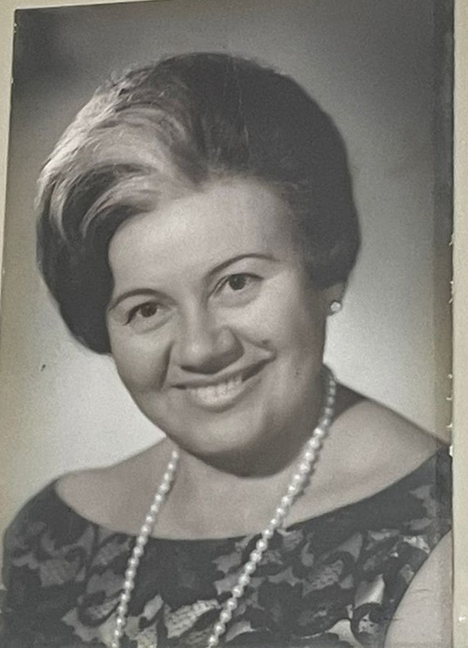• Prof. Antonia Boggino 1957-1960.
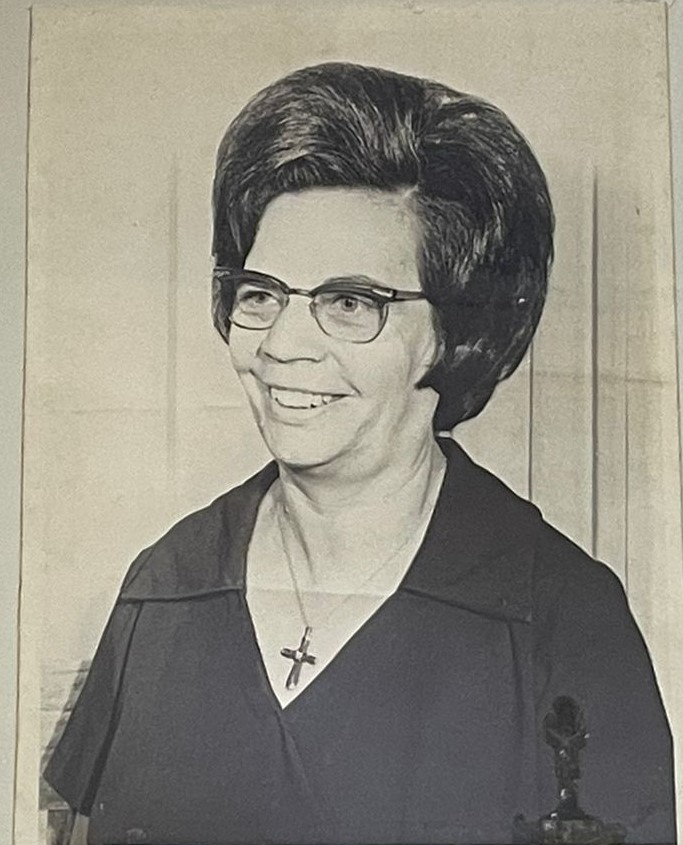• Prof. Alicia Frutos de Domaniczky 1961.
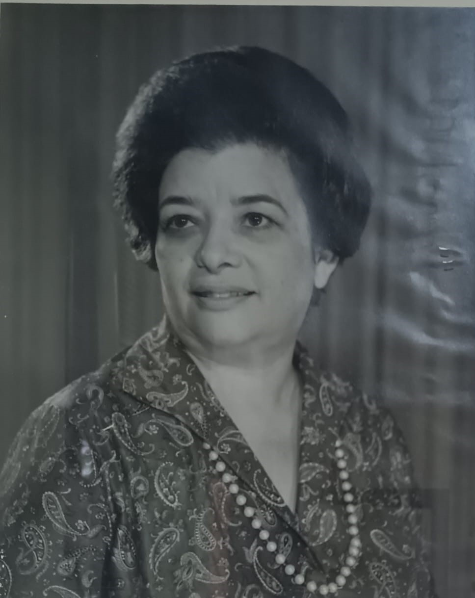• Prof. Luciana Rolón 1961
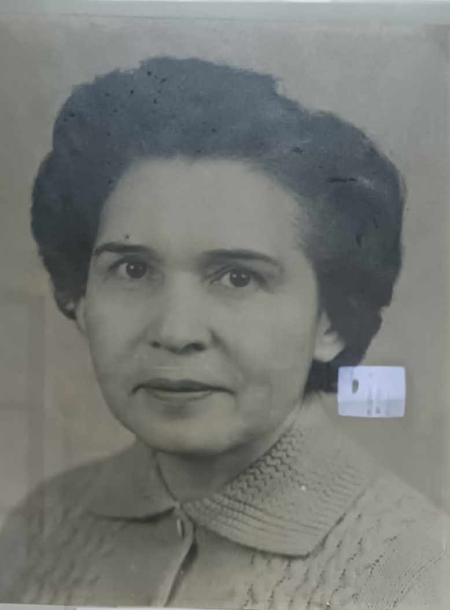• Prof. Ranulfo Pérez 1962 - 1967.
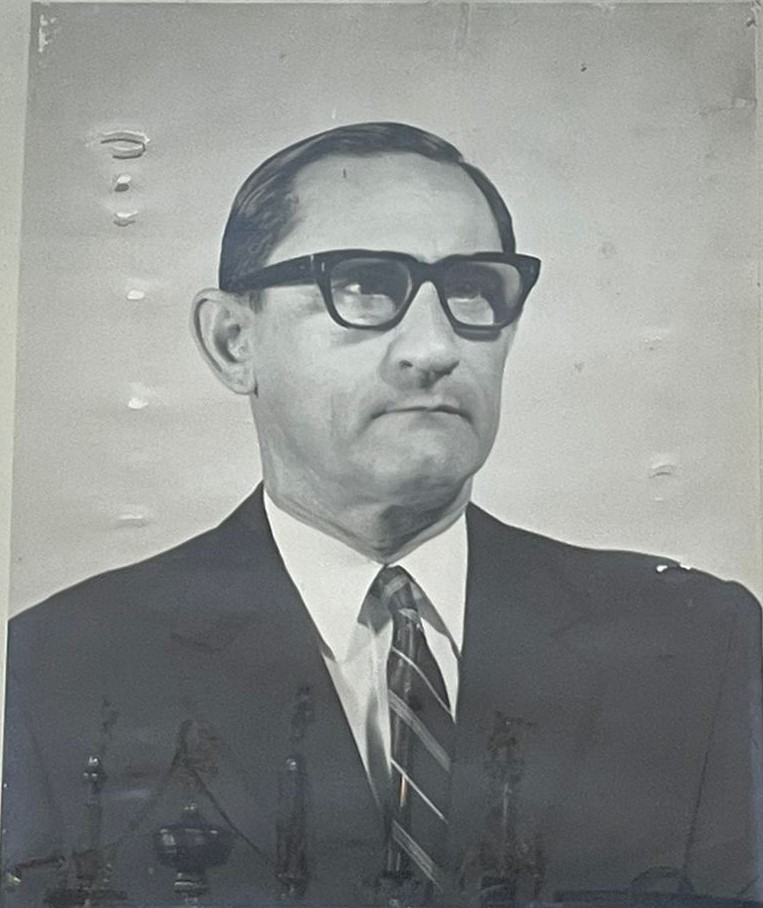• Prof. Abelardo Caballero 1967 - 1969.
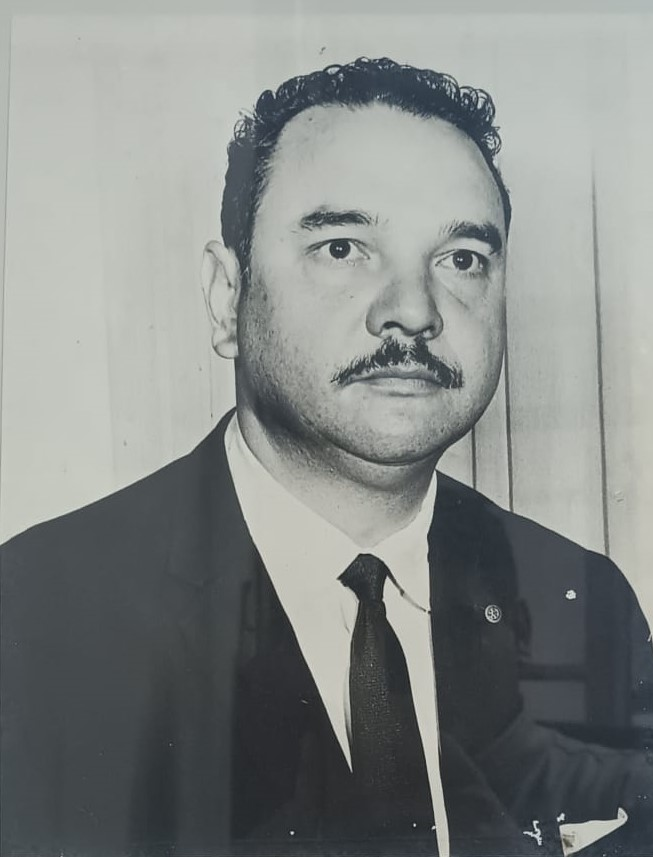• Prof. Dora Elena Frutos de Serratti 1969-1970.
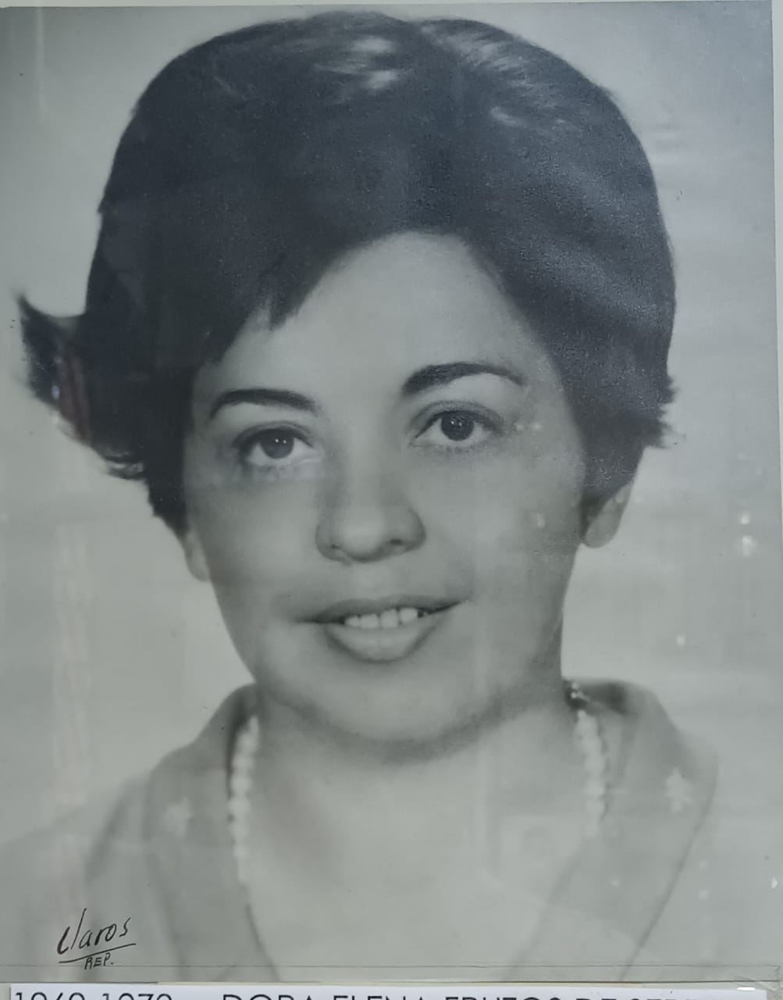• Lic. Olga Kostenco de Cáceres 1970-1985
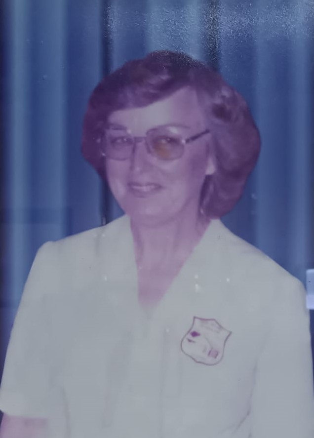• Lic. Mary Caballero de Maidana 1985 - 1989.
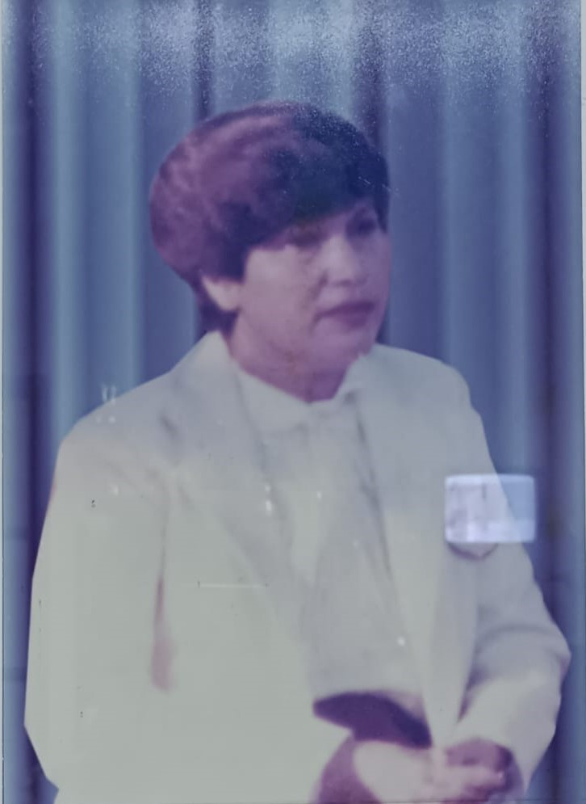• Lic. Berta Vera de Cáceres 1989 - 1992.
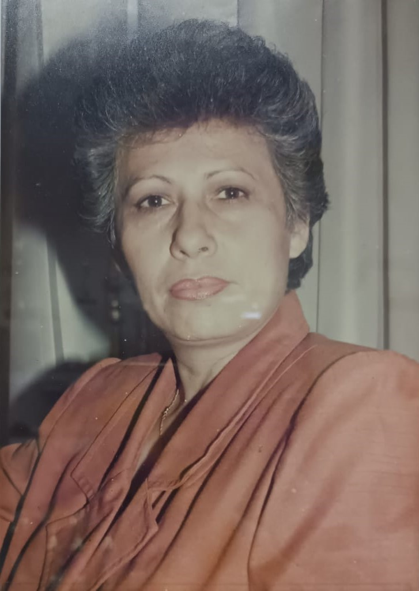• Lic. Melania Cantero de Martinez 1992-2003
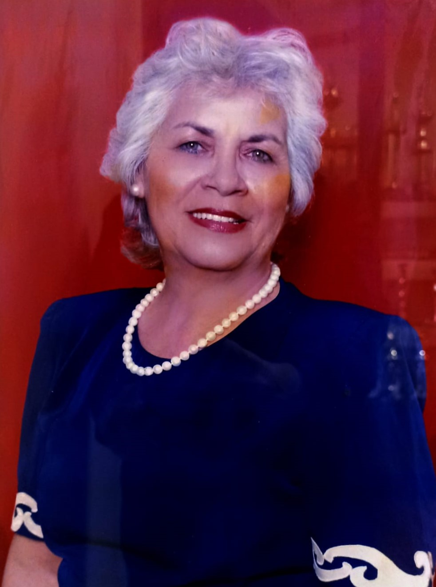• Mag. Graciela Vargas Díaz 2005-2009
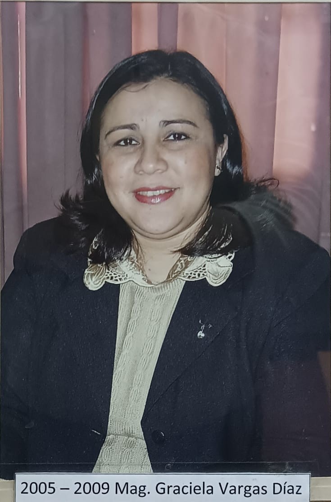• Mag. María Estela Segovia 2012-2013
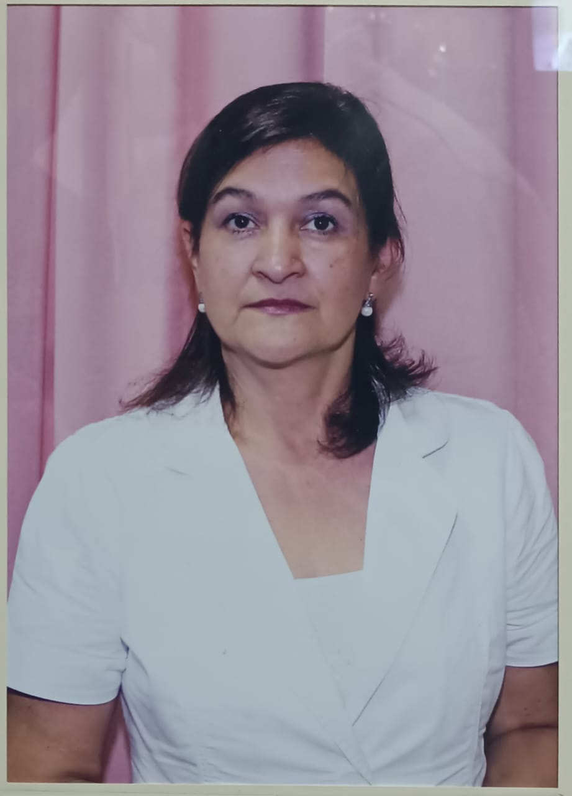• Actualmente el cargo de directora general lo ocupa la Dra. Patricia Elizabeth López Martínez, Encargada de despacho.
• La actual Encargada de despacho del Bachillerato Técnico es la Magister Nancy Elizabeth Rotela de Fernández
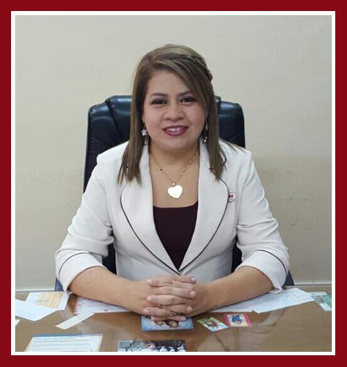• La actual Encargada de despacho del Bachillerato científico es la Lic. Letizia Pineda